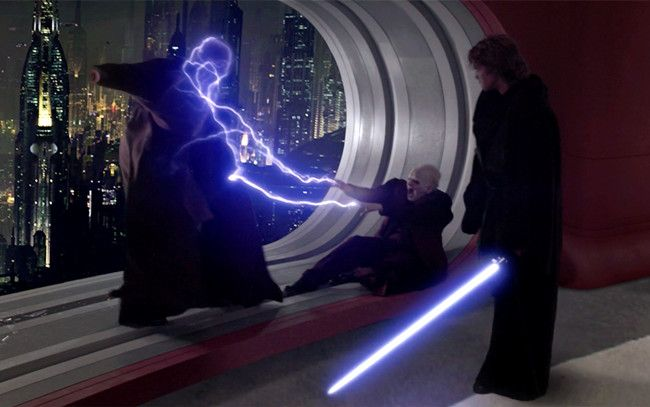
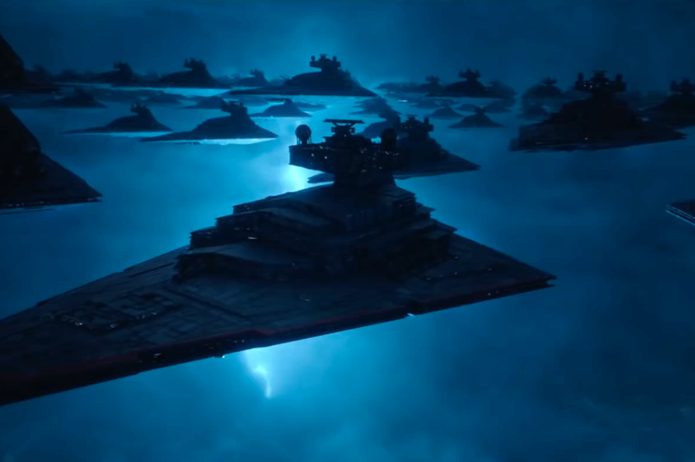

The Rise of Skywalker - A Review on the last movie about the skywalkers

What a movie, immediately we are greeted with the consequences of the last film. We see Poe and Finn trying to get away from a couple of first-order TIE Fighters. This is no longer as easy as going to hyperspace since the first order had developed technology track travel by hyperspace. As a beginning, it works as a great scene and it truly shows how different the characters and the tactics of war have become. I also think it mirrors the characters’ transformations from attack of the clones to revenge of the sith.
We cut to Rey and her training with Leia. I do not have a problem with the fact that she is a Jedi. What I do have a problem with is that it is never mentioned even once before. She runs her training course who in my opinion is kind of terrible, it focuses on combat as for example she uses a training droid where she blocks the blasts. The Jedi were never meant to be warriors, they were ”...The Guardians of peace and justice in the old republic...”. This however changed after and during the clone wars, the Jedi were made generals and warriors instead of peacekeepers. That is something that Luke would now, who trained Leia.
They head to the planet Pasaana and when they reach his remains below quicksand in a cave system they also find a dagger with sith runes inscribed. As C-3PO accompanied them it makes sense that he would be able to translate them as he is fluent in millions of languages but he cannot. This is, in my opinion, a very idiotic problem/premise as the droid was not built in the republic but in Hutt space. More specifically Tatooine.
In an attempt to rescue Chewie who was abducted by the first order she uses force lightning, an ability only seen by two people prior in canon, Darth Tyranus & Darth Sidious himself. This is the first hint of her heritage and while rescuing Chewie & Co general Hux reveals himself to be the spy within that the resistance has been getting intel from.
This brings me to the second problem with the film and the sequel trilogy in general, the lightsaber duels are for the most part completely pointless and are without consequences. If we think back to the duels in both the original trilogy and the prequel trilogy, all of the duels had large consequences. In A New Hope Obi-Wan dies after fighting Vader, in Empire Strikes Back Luke faces off with Vader and loses both his arm and “his” lightsaber. In return of the Jedi Luke, both becomes a true Jedi Knight and the two remainings sith dies fulfilling the prophecy that Anakin would bring balance to the force.
In the sequel trilogy, however, none of the duels really matter. Sure the duels are in great quantity but I felt like they overpopulated the movies with duels and explosions to compensate for the lack of actual story. Action in a movie like this is of course always expected but for a franchise like this, there has to be some stake for the action.

They find the Wayfinder at the wreckage of the old Death Star and AGAIN Kylo faces off with Rey. This time however Kylo actually destroys the Wayfinder and throws his lightsaber into the ocean, Rey then uses force healing. An ability we have not seen since before order 66.
They head to Exegol for the final confrontation with the emperor and his fleet, what the actual f***! How am I supposed to take this seriously when the enemy is so unbelievably powerful that literary nothing they can do is gonna stop them. This is not helped by the fact that they powered up the emperor almost to the level he was in legends. However, Luke is still worthless. In legends, he literary prevented an imperial star destroyer from escaping and pulled it to the ground during the Battle of Jakku. But what do we get, an annoying bitch who sees no hope for the future of what was once upon a time the most powerful organization in the galaxy?
If he can just disable all the ships in the resistance fleet what stops him from destroying Rey's lightsaber. How is it that a bolt of force lightning that powerful can be stopped by a mere lightsaber. Except it could not, BUT TWO CAN. The fact that she just gives Kylo a lightsaber so he can defeat the knights of ren is stupid beyond belief. ”...A dyad in the force...”, how is it that we did not hear or now about this before. In a time with literary 10 000 Jedi knights. How is that it is not mentioned anywhere prior to this. It’s a stupid idea and the fact that they just pull a new force power out of nowhere. In the prequels, it makes sense that new powers emerge since there were thousands of years of teachings and knowledge. But now? It doesn’t make sense that they are still getting new abilities.
Now the conclusion, I think the film deserves some credit. It truly had an impossible task ahead of itself. Tying over 40 years of cinema and unrealistic expectations are truly difficult in only one film. But I think that the fact that they actually had a movie by the end even though Ryan Reynolds just decided to completely remove Snoke as a villain. I think it would have been interesting to actually see Kylo become the main villain, powered up as hell. I think that the final battle would be more interesting, maybe they would not have to use the most bullshit fleet in the history of cinema then. It also makes no sense, why make them when a star destroyer can render the surface of a planet uninhabitable within just days[1]. The only thing they were doing when destroying planets was destroying resources which is probably the most retarded plan ever.
